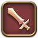

Combat
Tank
Tanking in this game is what we lovingly refer to as "masochism". You're a damage sponge, getting knocked into next Tuesday so your fragile, squishy peers don't rage quit and never speak to you again. Fortunately this means you're above reproach, and if any DPS dare complain you pull too many enemies you can just turn off enmity and let the mobs get them.
Heal
So you have a god complex and the idea of holding the lives of your peers in your hands is appealing? Do you want to be the healer with a gun meme? This is the job for you. Much like the tank, healers can do no wrong. Tanks will occasionally press you into working harder by leaving enmity off or refusing to mitigate the damage they're taking, in which case you're well within your rights to let them sweat it out a bit without heals. If they die, they die. What does it matter that the rest of the party is next? They'll learn their lesson.
DPS
Damage dealers! Magical or physical, ranged or up close and personal. You'll be the one putting the big numbers up on the baddies. Sadly, everyone hates you. But hey, it's okay, you have three times as many job options as the other roles. Sometimes you even get a fancy hat.